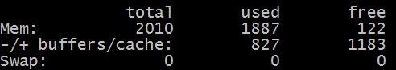

SWAP (своп) — это механизм виртуальной памяти, при котором часть данных из оперативной памяти (ОЗУ) перемещается на хранение на HDD (жёсткий диск), SSD (твёрдотельный накопитель), флеш-накопитель или иное вторичное хранилище. Как правило, swapping (свопинг) происходит, когда оперативная память переполнена, и ей для работы требуется дополнительное пространство.
У сайта sheensay.ru есть свой канал в Telegram - @sheensayru.
В нём публикуются ссылки на новые материалы сайта и интересные, по моему мнению, публикации. Подписывайтесь и будьте в курсе последних событий.
Спасибо, уже подписался
Зачастую, от недостатка свободной памяти первой страдает база данных. Вы можете сталкиваться с проблемами типа:
При подобных симптомах и ошибках может помочь своппинг.
Экономия бюджета
Допустим, рассчитано, что под работу сайта необходимо 2 гигабайта оперативной памяти. Однако, в зависимости от всплесков трафика, активности пользователей или особенностей работы проекта в моменты пиковой нагрузки оперативной памяти может не хватать, что, в свою очередь, может вызывать сбои в работе. Можно решить проблему, докупив оперативную память на 2-4 гигабайта, но тогда большую часть времени она будет простаивать вхолостую. В таком случае, может помочь простое подключение свопа на 4 гигабайта — вы выделяете место на диске под своп, и он берёт на себя роль помощника оперативной памяти.
Теперь сравним:
|
Сравнение стоимости оперативной памяти и SSD | ||
|
(цены актуальны на 7 июля 2017 года) |
||
|
Оперативная память, в среднем за 1 гигабайт |
100 рублей в месяц |
170 рублей в месяц |
|
SSD, в среднем за 1 гигабайт |
10 рублей в месяц |
13 рублей в месяц |
Как видно из таблицы, экономия выйдет примерно в 10 раз.
Медленная работа
Если файл или раздел свопа хранится на HDD (жёстком диске), то скорость чтения данных с него намного меньше, чем из оперативной памяти. Получше дела обстоят с SSD (твёрдотельным накопителем), однако, надо понимать, что поиск и чтение данных происходит через оперативную память, что, в свою очередь, всё равно увеличивает время отклика. Поэтому, если Вы решили сэкономить на оперативной памяти, полностью положившись на SWAP, то я категорически не рекомендую так делать.
SWAP — это не замена оперативной памяти, а всего лишь его поддержка.
Необходимо наличие свободного места на диске
Вам необходимо зарезервировать свободное место на диске под своп, иначе стабильность работы не гарантируется. Это не то, чтобы недостаток свопа, просто его надо учитывать и помнить о нём.
Как создать и подключить файл подкачки SWAP
Далее, в работе используется командная строка SSH.
Инструментарий: Far Manager или Putty.
Для примера приводятся команды из под root. Если Вы работаете не под root, перед командами задавайте префикс sudo
Проверка наличия свопа в системе
Для начала, нужно убедиться, что своп ещё не подключен:
|
swapon -s |
Если команда выдала пустой результат или что-то навроде:
Результат:
|
1 |
Filename Type Size Used Priority |
— значит, своп, скорее всего отсутствует.
Дополнительно проверим командой:
|
free -m |

Если в таблице в строке swap стоит 0, значит своп отсутствует.
Проверка наличия свободного места на диске
Теперь, надо проверить, сколько свободного места есть на диске:
|
df -h |
В результате, мы увидим что-то подобное:
|
2 3 4 5 6 7 8 9 |
root@server:~# df -h Файловая система Размер Использовано Дост Использовано% Cмонтировано в /dev/vda1 30G 20G 9,0G 66% / udev 10M 0 10M 0% /dev tmpfs 403M 41M 362M 11% /run tmpfs 1006M 336K 1005M 1% /dev/shm tmpfs 5,0M 0 5,0M 0% /run/lock tmpfs 1006M 0 1006M 0% /sys/fs/cgroup tmpfs 1006M 492K 1005M 1% /tmp |
Как мы видим, доступно 9 гигабайт дискового пространства — вполне достаточно, чтобы создать своп-файл.
Исходите из принципа — сколько может понадобиться, столько и выделяйте. Как правило, можно начинать с размера объёма оперативной памяти, либо его удвоенного количества. Например, если у вас в системе 2 гигабайта оперативки, своп можно сделать размером 2-4 гигабайта, как правило, этого должно хватать. Но, Вы можете скорректировать его размер под себя.
Допустим, мы хотим создать swap-файл размером 4 гигабайта.
Далее, здесь существует 2 подхода, традиционный медленный и новый быстрый:
Быстрый способ
Используем fallocate:
|
fallocate -l 4G /swapfile |
Результатом будет пустая строка, это нормально.
В отличие от dd, результат будет получен почти сразу, и я рекомендую именно его.
Традиционный, медленный способ
Или используем команду:
|
dd if=/dev/zero of=/swapfile bs=1G count=4 |
Синтаксис команды простой:
Будьте очень внимательны с синтаксисом команды, потому что если, например, ошибиться с определением пути для of= (куда сохранять файл), можно повредить данные на диске.
Теперь, когда файл создан, проверим результат:
|
ls -lh /swapfile |
В результате увидим:
-rw-r--r-- 1 root root 4.0G Jul 07 16:16 /swapfile
Как видим, файл создался верно и с нужным объёмом.
Для начала, ограничим права доступа к вновь созданному файлу.
Предоставление другим пользователям возможности читать или писать в этот файл будет представлять собой огромный риск для безопасности, поэтому ограничение командой ниже строго обязательно:
|
chmod 600 /swapfile |
Проверим результат:
|
ls -lh /swapfile |
В результате, мы должны увидеть подобное:
-rw------- 1 root root 4.0G Jul 07 16:16 /swapfile
Права прописаны верно.
Теперь нужно сделать из swapfile файл подкачки:
|
mkswap /swapfile |
В результате, увидим примерно следующее:
Setting up swapspace version 1, size = 4193300 KiB
no label, UUID=e5f3e9cf-c1a9-4ed4-b8ab-711b6a7d6544
Теперь, файл готов в роли свопа. Подключим его к системе:
|
swapon /swapfile |
|
swapon: /swapfile: swapon failed: Operation not permitted |
Если на данном этапе выходит похожая ошибка, значит, скорее всего, своп запрещено подключать в систему. Такое ограничение часто ставят на VDS с виртуализацией OpenVZ. Рекомендую использоватьсервера с виртуализацией на KVM, которые позволяют включать SWAP.
Всё, теперь своп подключен и работает. Осталось проверить правильность работы самой первой командой:
|
swapon -s |
Результат:
|
1 2 |
Filename Type Size Used Priority /swapfile file 4193300 0 -1 |
Своп также будет виден в стандартных командах:
|
free -m |
Результат:
|
1 2 3 4 |
total used free shared buffers cached Mem: 2010 1887 122 0 5 30 -/+ buffers/cache: 827 1183 Swap: 4095 0 4095 |
Всё, теперь точно, своп в системе готов и будет использоваться при необходимости.
Добавление свопа в автозагрузку
Чтобы при перезагрузке сервера своп автоматически подтягивался в систему, нужно прописать его в /etc/fstab:
|
echo "/swapfile none swap sw 0 0" >> /etc/fstab |
Теперь система знает, где и как при перезагрузке искать и подключать своп.
Проверить, подключен ли своп в автозагрузке, можно с помощью редактора:
|
nano /etc/fstab |